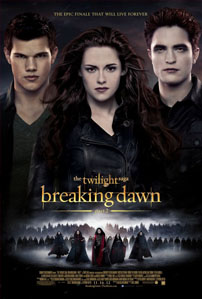
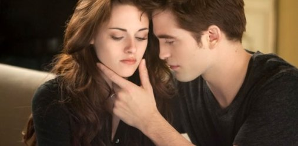

Review Breaking Dawn Part 2
Minggu, 1 Desember 2013

So… this is the end. Hold your breath and count to ten. No… seriously. Franchise James Bond masih akan ada untuk puluhan tahun mendatang. Namun, kecuali jika Hollywood kemudian berusaha untuk mengambil keuntungan komersial tambahan dengan melakukan reboot atau mengadaptasi novel karya Stephanie Meyer menjadi sebuah serial televisi, maka The Twilight Saga: Breaking Dawn – Part 2 akan menjadi kali terakhir dunia dapat menyaksikan kisah percintaan antara Bella Swan dan Edward Cullen di layar lebar – yang tentu akan menjadi momen yang sangat menyedihkan bagi beberapa orang dan… momen yang patut untuk dirayakan bagi sebagian orang lainnya. Pun begitu, sebenci apapun Anda terhadap keberadaan franchise ini, rasanya adalah tidak mungkin untuk menyangkal bahwa keberadaan sutradara Bill Condon semenjak The Twilight Saga: Breaking Dawn – Part 1 mampu memberikan perubahan yang menyegarkan pada franchise ini. Dan untuk menyelesaikan tugasnya, Condon ternyata mampu memberikan kejutan yang sangat, sangat manis pada The Twilight Saga: Breaking Dawn – Part 2. Sebuah kejutan yang sebenarnya telah lama ditunggu kehadirannya dan, untungnya, mampu dieksekusi dengan sempurna.
Melanjutkan kisah yang terputus pada The Twilight Saga: Breaking Dawn – Part 1, setelah hampir meninggal dunia ketika sedang melahirkan anak hasil pernikahannya dengan Edward Cullen (Robert Pattinson), Bella Swan (Kristen Stewart) kini telah berubah sepenuhnya menjadi seorang vampir – sebuah situasi yang ternyata sangat dinikmati oleh Bella. Ia kini merasa lebih hidup dari sebelumnya: ia memiliki tenaga fisik yang lebih kuat, kemampuan indera yang lebih tajam serta… ehmmm… gairah seksual yang kini tidak lagi harus disembunyikannya. Kehidupan baru Bella juga semakin diperlengkap kehadiran puterinya, Renesmee (Mackenzie Foy), yang beranjak dewasa dengan cepat, keluarga Cullen yang menerimanya dengan begitu baik, terjalinnya kembali hubungan antara dirinya dengan sang ayah, Charlie Swan (Billy Burke), serta sahabatnya, Jacob Black (Taylor Lautner), yang ternyata mampu menerima kenyataan bahwa dirinya kini telah menjadi milik orang lain.
Sayang, masa-masa indah awal pernikahan tersebut tidak berlangsung lama. Ketika salah seorang anggota kelompok vampir, Irina (Maggie Grace), melihat Renesmee dan menyangkanya sebagai seorang anak yang masih memiliki sifat manusia – sebuah hal yang sangat terlarang di kalangan vampir, ia lantas melaporkannya kepada pihak Volturi. Mengetahui hal tersebut, keluarga Cullen lalu berusaha untuk mengumpulkan seluruh klan vampir dari seluruh penjuru dunia agar dapat menyaksikan sendiri bahwa Renesmee adalah merupakan sosok vampir asli dan bukanlah seorang anak manusia yang diubah menjadi vampir seperti yang disangkakan Irina. Pun begitu, pimpinan Volturi, Aro (Michael Sheen), ternyata memang telah memiliki niat buruk terhadap klan Cullen sehingga apapun alasan yang dikemukakan oleh mereka… pihak Volturi siap untuk memeranginya.
Jangan khawatir. Seperti beberapa seri sebelumnya, The Twilight Saga: Breaking Dawn – Part 2 masih memiliki beberapa momen yang seringkali dirasakan kurang begitu esensial untuk ditampilkan, namun akhirnya disajikan dengan durasi yang terkesan dipanjang-panjangkan. Pun begitu, ketika konflik utama film ini mulai mengambil tempatnya, The Twilight Saga: Breaking Dawn – Part 2 secara perlahan mulai menemukan ritme penceritaannya yang sangat meyakinkan. Selain kisah konflik yang meruncing antara keluarga Cullen dengan klan Volturi, The Twilight Saga: Breaking Dawn – Part 2 juga mampu terasa lebih berwarna karena, untuk pertama kalinya, jalan cerita film seri ini sama sekali tidak berfokus pada kisah segitiga antara karakter Edward Cullen – Bella Swan – Jacob Black maupun dialog-dialog mesra – dan cenderung beraroma seksual – yang terjadi antara pasangan Edward Cullen dan Bella Swan. Bravo!

Dalam waktu yang lebih singkat dari The Twilight Saga: Breaking Dawn – Part 1, jalan cerita The Twilight Saga: Breaking Dawn – Part 2 kemudian mengenalkan deretan panjang karakter-karakter minor dengan peran dan latar belakang yang bervariasi. Walaupun kisah karakter-karakter minor ini dihadirkan dalam tempo cerita yang minim, secara mengesankan, Bill Condon mampu menggali kisah mereka dengan begitu baik. Ditambah dengan pemberian porsi penceritaan yang lebih besar terhadap klan Volturi, Condon mampu mengolah deretan kisah pendukung tersebut menjadi sokongan yang kuat bagi jalan cerita utama The Twilight Saga: Breaking Dawn – Part 2.
Dan tentu saja… setelah sekian lama menunggu, Condon akhirnya mewujudkan impian banyak orang untuk menyaksikan kehadiran adegan kekerasan dan penuh darah – well… figuratively speaking, not literally – dalam serifranchise The Twilight Saga. Adegan pertarungan yang terbentuk antara klan Volturi dan keluarga Cullen serta deretan vampir dan werewolves yang mendukung mereka mampu dieksplorasi Condon dengan sangat, sangat menegangkan dan dipenuhi dengan begitu banyak aliran emosional. Sulit untuk membayangkan bahwa banyak orang harus menunggu selama empat tahun dan empat film sebelum akhirnya mampu benar-benar merasa terhibur dengan kehadiran franchise ini… but yah… The Twilight Saga: Breaking Dawn – Part 2 jelas adalah sebuah hiburan yang sangat menyenangkan.
Di departemen akting, setiap pemeran film ini sepertinya telah benar-benar mampu dengan karakter yang mereka perankan. Mulai dari Robert Pattinson, Kristen Stewart – yang juga untuk pertama kali hadir dengan penampilan emosional yang lebih bervariasi – bahkan Taylor Lautner turut berhasil menampilkan performa akting yang wajar. Dari jajaran pemeran pendukung, rasanya tidak akan ada yang merasa kecewa dengan penampilan antagonis dari Michael Sheen dan Dakota Fanning. Beberapa nama, seperti Lee Pace, Maggie Grace, Billy Burke dan Peter Facinelli berhasil tampil lebih kuat dibandingkan dengan jajaran pemeran pendukung lainnya meskipun dengan porsi penceritaan yang sama minimnya.
Tata produksi The Twilight Saga: Breaking Dawn – Part 2 juga menghadirkan tata produksi yang lebih baik dari seri-seri sebelumnya. Sinematografi karya Guillermo Navarro berhasil menghadirkan pilihan-pilihan gambar yang begitu indah sekaligus kuat secara emosional. Begitu juga dengan tata musik arahan Carter Burwell yang melanjutkan kesuksesannya dalam mengarahkan musik seri ini pada Twilight (2008) dan The Twilight Saga: Breaking Dawn – Part 1(2010). Condon juga menghadirkan segmen spesial yang menghadirkan seluruh jajaran pemeran The Twilight Sagasemenjak seri pertamanya dengan diiringi lagu A Thousand Years, Pt. 2 dari Christina Perri dan Steve Kazee. Cukup memberikan banyak memori yang hangat mengenai keberadaan franchise ini semenjak kehadirannya empat tahun lalu.
So… yah… this is it. The Twilight Saga akhirnya memberikan penampilan finalnya. Beruntung, dibawah kepimpinan Bill Condon, dua seri terakhir The Twilight Saga mampu memberikan deretan perubahan yang menyenangkan. Puncaknya, The Twilight Saga: Breaking Dawn – Part 2 mampu dikemas menjadi sebuah sajian yang begitu memuaskan. Condon mampu mendapatkan penampilan terbaik dari jajaran pemerannya, tata produksi yang meyakinkan serta kemampuan untuk memaksimalkan jalan cerita yang memang banyak terisi momen-momen yang terkesan begitu cheesy. The Twilight Saga: Breaking Dawn – Part 2 jelas merupakan bagian terbaik dari franchise ini secara keseluruhan. Sebuah persembahan maksimal sebagai seri akhir franchise yang kemungkinan besar bahkan akan mampu memuaskan mereka yang semenjak lama membenci seri ini. So long, Bella! So long, Edward! So long, Jacob!Thank you for… yeah… those cheesy sweet memories.